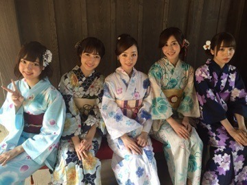
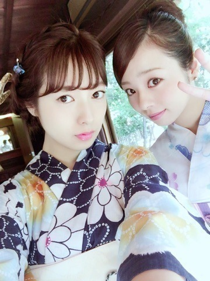
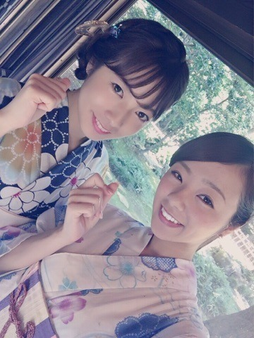
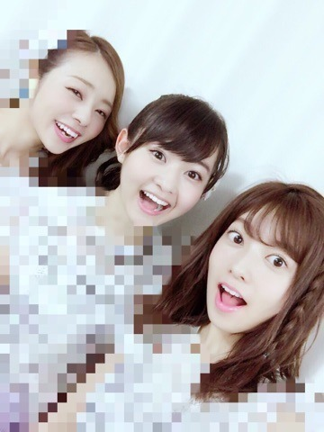

こんにちわ.＊
かわむら まひろです！
現在発売中のB.L.Tだよ♡

プライベートではなかなか着る機会も無いし 新鮮な気持ちだったりで楽しかったよ．
白の浴衣は初めて着たけど，又着る機会があればもう一度白の浴衣が着たいかも♡ すごい涼しげでしょ(*^^*)？
ゆうりとも写真撮ったよ～♡
もう１枚♡

まだあった♡笑

そしてそして前日，22日と23日は「真夏の全国ツアー2016★」の大阪公演でしたー！！！！ まいまいが卒業して1発目のライブ！
大阪に集まってくれた皆，そして行けなかったけど応援してくれていた皆，本当にありがとうございました！ 大阪会場は３公演とも無事に終え，最高に楽しいライブになりました(*^^*)
新衣装が沢山だったり，
新曲も沢山だったりして，ステージに立つ私達も，客席から見る皆も，新しい感じを楽しめたのではないかな？と思います♡笑
それにね、、、
7月23日で私は21歳になりました(*^^*)！！！！
３公演目のラスト1曲に入る前、、
サプライズで皆からお祝いしてもらいました。
驚いたなぁぁ。。とゆうか本当に幸せだったし嬉しかった。 皆本当にありがとう！！！
あんな場所でね...私のためにね...貴重な時間をね... こんな素晴らしいファンの皆とメンバーとスタッフさんにね... 祝ってもらえるとこが当たり前な事じゃないって、本当に感謝しなきゃ．と思っていました。
本当に本当にありがとう。
サイリウムを、私のサイリウムカラー赤と白にしてくれたりね，公式に赤がないから，ピンクとか紫とか赤に近い色にしてくれたりね... 皆の優しさを感じました！！
さいっこうの21歳の誕生日になりました！！！
21歳、元気に頑張るぞぉぉぉぉぉ♡
そして，今日も現場でスタッフさん方がフルーツの盛り合わせを用意し祝ってくれました。
(T . T)(T . T)(T . T)(T . T)(T . T)
感謝感謝感謝。 私のために... 冷たくされたら泣くけど、優しくされても泣きそうになる... ♫笑
皆、、、大好きだっ！
以上♡
まだ新衣装は載せちゃダメなの～♡
もざもざもざ。

ばいばい。